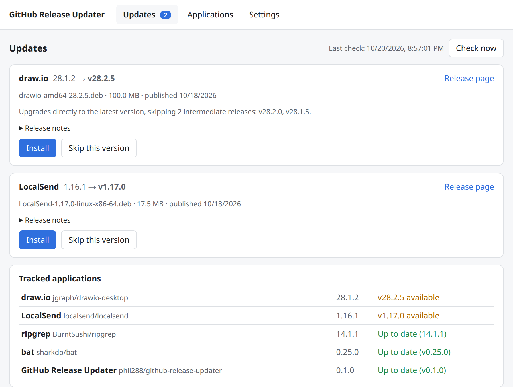

GitHub Release Updater
Auto-update the apps you installed from GitHub releases. One click, verified, with your OS's own admin prompt.
Ubuntu .debWindows .msiSHA-256Open source
Auto-update the apps you installed from GitHub releases. One click, verified, with your OS's own admin prompt.
